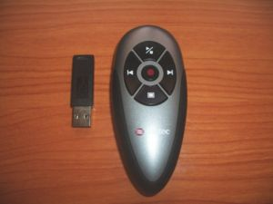
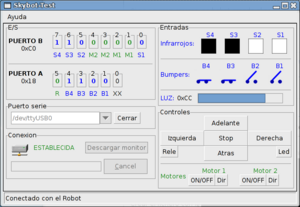
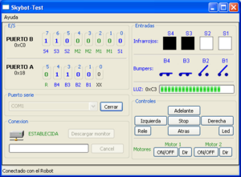
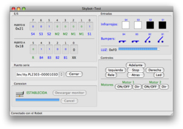
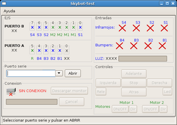
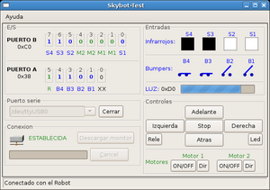
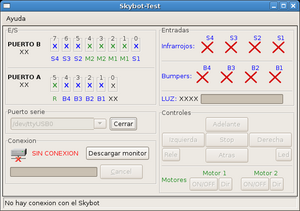
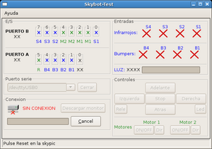
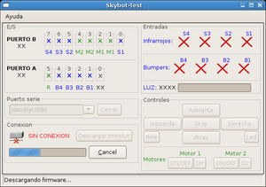
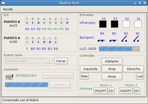

Contenido
[ocultar]Introducción
El skybot-test es una aplicación multiplataforma para controlar el robot Skybot mediante una interfaz gráfica y mostrar en ella el estado de todos sus sensores. Es muy útil para verificar si el Skybot está funcionando correctamente así como detectar si los motores están correctamente conectados y comprobar el funcionamiento de los sensores de infrarrojos, bumpers y sensor de luz.
Características


- Programa autocontenido: sólo es necesario este programa para probar el Skybot. Incluye un botón para descargar el firmware adecuado.
- Movimiento del Skybot mediante botones de la interfaz gráfica
- Movimiento del Skybot utilizando directamente el teclado
- Visualización de los puertos A y B, con el estado de todos sus bits y su valor en hexadecimal
- Visualización de todos sus sensores:
- 4 sensores de infrarrojos. CNY70
- 4 sensores de contacto. Bumpers
- 1 sensor de luz. LDR
- Acceso a los bits individuales del puerto B mediante botones/teclas
- Cambio de estado del relé de la Sky293 mediante botón/teclas
- Cambio de estado del led de la Skypic mediante botón/teclas
- Control mediante un mando a distancia Bluetooth.
Pantallazos
| 
Pantallazo de Skybot-test-1.0 en Gnu/Linux |

Pantallazo de Skybot-test-1.0 en Windows XP |
| 
Pantallazo de Skybot-test-1.0 en un Mac |


Ejemplo de uso
- Alimentar el Skybot
- Conectarlo al PC a través del puerto serie (o utilizando un conversor USB-serie)
- Ejecutar el programa skybot-test. El aspecto del programa será como el mostrado en el Pantallazo 1.
- Seleccionar el puerto serie donde está conectado el Skybot y pulsar en Abrir
Para controlar el Skybot se debe descargar un programa monitor. Si esto ya se ha hecho previamente y además el robot está correctamente alimentado y conectado al PC, se establecerá la conexión entre el PC y la tarjeta Skypic y la aplicación Skybot-test funcionará normalmente, como se muestra en el pantallazo 2:
| 
Pantallazo 1: Skybot-test nada más arrancarlo. Lo primero es seleccionar el puerto serie donde está conectada el Skybot |

Pantallazo 2: Puerto serie Abierto y Skybot detectado |


- Si la conexión con el monitor no se ha establecido, aparecerá lo mostrado en el pantallazo 3.
- Para establecer la comunicación hay que descargar el programa monitor. Para ello pinchar en "Descargar monitor". Aparecerá un mensaje inferior indiando que se pulse reset en la tarjeta Skypic (Pantallazo 4)
| 
Pantallazo 3: Conexión con el Skybot no establecida |

Pantallazo 4: Preparado para descargar el programa monitor. Hay que apretar el pulsador de reset de la skypic |


- Al pulsar el botón de reset de la Skypic comenzará la descarga del monitor (pantallazo 5)
- Al finalizar se establecerá la conexión (pantallazo 6)
| 
Pantallazo 5: Descargando el programa monitor |

Pantallazo 6: Descarga del monitor completada y conexión establecida |


Teclas
El skybot-test permite utilizar el teclado para realizar diferentes acciones:
- O,P,Q,A,(espacio): Movimiento del robot hacia la izquierda, derecha, adelante, atrás y parar.
- 1,2,3,4: Cambiar el estado de los bits RB1, RB2, RB3 y RB4 que son los asignados a los motores
- r: Cambiar el estado del relé
- l: Cambiar el estado del led
Descargas
Versión: 1.0.1
| Fichero | Descripción |
|---|---|
| Skybot-test-1.0.1.tar.gz | Fuentes |
| skybot-test_1.0.1-1_i386-ubuntu-10.04.deb | Paquete para Ubuntu 10.04 |
| skybot-test_1.0.1-1_i386-ubuntu-9-04.deb | Paquete para Ubuntu 9.04 (Jaunty Jackalope) |
| Skybot-test_1.0.1-1_i386-etch.deb | Paquete para Debian/Etch |
| Skybot-test_1.0.1-1_i386.deb | Paquete para Debian/Lenny |
| skybot-test-1.0.1.win32.exe | Autoinstalable para Windows XP |
Versión: 1.0
| Fichero | Descripción |
|---|---|
| Skybot-test-1.0-src.tar.gz | Fuentes |
| Skybot-test_1.0-1_i386-etch.deb | Paquete para Debian/Etch |
| Skybot-test_1.0-1_i386.deb | Paquete para Debian/Lenny |
| skybot-test-1.0.win32.exe | Autoinstalable para Windows XP |
Licencia
|
|
Skybot-test es Software libre distribuido bajo la licencia GPL v3.0 |
Cambios
Versión 1.0.1
Es una versión de mantenimiento. No incluye nuevas funcionalidades
- Bug corregido: Problemas al usar el control por teclas.
- Añadida ventana de ayuda con las teclas
Versión 1.0
Versión inicial, creada para el Taller Skybot Iberoamérica 2008
Instalación
Instalacion en Windows XP
Hay que descargar e instalar los siguientes paquetes. Utilizar las opciones que vienen por defecto:
- Lenguaje Python. python-2.5.msi
- Extensiones para Windows.pywin32-210.win32-py2.5.exe
- Librería de acceso al puerto serie: pyserial-2.2.win32.exe
- Librerías gráficas wxPython: wxPython2.8-win32-unicode-2.8.6.0-py25.exe
- Librería Libiris: libIris-1.2.win32.exe
- Librería LibStargate: libstargate-1.2.win32.exe
- Por último el Skybot-test: skybot-test-1.0.1.win32.exe
Si se han utilizado las opciones que vienen por defecto en los instaladores, el pyburn se encuentra en el directorio: C:\python25\Scripts. El ejecutable es skybot-test.
Ubuntu 9.10
- Instalar la librería libiris: python-libiris_1.2-5_i386-ubuntu-10.04.deb
- Instalar la librería LibStargate: libstargate_1.2-1_i386-ubuntu-10.04.deb
- Instalar el Skybot-test: skybot-test_1.0.1-1_i386-ubuntu-10.04.deb
Ubuntu 9.04
- Instalar la librería libiris: python-libiris_1.2-5_i386-ubuntu-9-04.deb
- Instalar la librería LibStargate: python-libstargate_1.2-1_i386-ubuntu-9-04.deb
- Instalar el Skybot-test: skybot-test_1.0.1-1_i386-ubuntu-9-04.deb
Debian-Etch (4.0)/ Ubuntu Feisty (7.04)
- Instalar los paquetes: (disponibles en los repositorios oficiales)
- python-serial: Librería de acceso al puerto serie
- python-wxgtk2.6: Librerías gráficas wxPython
- Instalar la librería libiris: Python-libiris_1.2-5_i386.deb
- Instalar la librería LibStargate: Python-libstargate_1.2-1_i386.deb
- En caso de tener una versión mas moderna que venga con Python 2.6 o genere algun tipo de error en la instalación, probar la instalación manual. Para ello, descargar el fichero con el codigo fuente y ejecutar, con permisos de root, "python setup.py install".
- Instalar el Skybot-test: Skybot-test_1.0-1_i386-etch.deb
- igual que en el caso anterior, bajar y descomprimir el fichero tar.gz con las fuentes y ejecutar "python setup.py install".
Otras distribuciones de Linux/FreeBSD
El Skybot-test está programa en Python por lo que es totalmente portable a otras distribuciones de Linux/FreeBSD. Para que funcione es necesario tener instalado:
- Python 2.4 o superior
- Librería de acceso al puerto serie en Python: Paquete pySerial
- Librería LibIris, para la descarga de programas en la Skypic
- Librería LibStargate, para la comunicación con los servidores grabados en la Skypic
Finalmente, para instalar el Skybot-test, descargar el paquete fuente, descomprimirlo, entrar en el directorio skybot-test-1.0 y ejecutar:
python setup.py install
Para ejecutarlo:
skybot-test
Desarrolladores
Entorno
- Lenguaje: Python 2.4 o superior
- Máquina donde se ha desarrollado: Portátil Dell con GNU/Linux Debian/Etch (4.0)
- Interfaz gráfica: wxPython.
- Construcción de la interfaz: wxglade 0.4.1 (Paquete debian: python-wxglade)
- IDE: Anjuta
- Dependencias:
- LibIris : Descargar de Firmware en la skypic
- LibStargate: Acceso a los recursos de la Skypic desde el PC
Acceso al repositorio
- SVN del proyecto http://svn.iearobotics.com/skybot_test
La versión actual se puede obtener así:
svn co http://svn.iearobotics.com/skybot_test/skybot-test-1.0.1/
Empaquetar para Debian/Ubuntu
Ejecutar los siguientes comandos:
svn export http://svn.iearobotics.com/skybot_test/skybot-test-1.0.1/ skybot-test-1.0.1 cd skybot-test-1.0.1 chmod a+x debian/rules dpkg-buildpackage -rfakeroot
Si no ocurren errores, se habrá creado el paquete .deb en el directorio padre
Crear ejecutable para windows
Bajar la versión del SVN:
svn co http://svn.iearobotics.com/skybot_test/skybot-test-1.0.1/ cd skybot-test-1.0.1
Crear el ejecutable:
python setup.py bdist --formats=wininst
Se creará el fichero dist/skybot-wx-1.0.1.win32.exe
Crear paquete fuente desde el SVN
Se quieren crear los ficheros .tar.gz y .zip con las fuentes del proyecto. Los pasos a seguir son: Bajar la versión desde el SVN:
svn co http://svn.iearobotics.com/skybot_test/skybot-test-1.0.1/ cd skybot-test-1.0.1
Crear el fichero con las fuentes:
python setup.py sdist --formats=gztar,zip
Los ficheros fuente creados son dist/skybot-wx-1.0.1.gz y dist/skybot-wx-1.0.1zip
Historia
El Skybot-test es una versión actualizada del programa CT294 que utilizábamos para el control del robot Tritt. Esta nueva versión es gráfica y multiplataforma, pero la funcionalidad es casi la misma.
- Octubre/2008: Programa Skybot-test en versión gráfica y multiplataforma
- Julio/2005: Programa Skybot-test para la consola de Linux y Botcontrol para windows. Realizados para el primer taller de robótica en la campus party.
- 1999: Programa CT294 para el control de Tritt.
Autor
Agradecimientos
- A Andrés Prieto-Moreno por las pruebas realizadas en Windows
Enlaces
- Programa Skybot-test para consola y plataformas Linux. Programado en C. (Obsoleto)
- BotControl. Control del Skybot desde plataformas Windows. Programado en Visual C++ 6.0. (Obsoleto)
Noticias
- 13/Jun/2010: Añadido paquete para Ubuntu 10.04
- 29/Jul/2009: Añadido paquete para Ubuntu 9.04
- 01/Nov/2008: Liberada versión 1.0.1
- 27/Oct/2008: Liberada la version 1.0 del Skybot-test
- 13/Oct/2008: Comenzada esta página